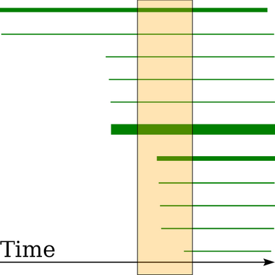
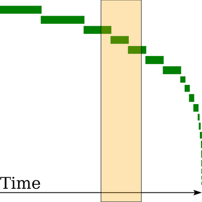
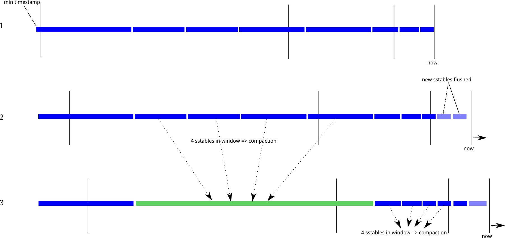

以下内容来自于最后的Reference中几篇文章的翻译和总结
Leveled Compaction
Leveled Compaction的一个可用于判断它是否适合使用的基本特征是：在压缩时，Leveled Compaction会消耗更多的I/O，以确保一行数据最多分布在若干个SSTable中，而这个最大值就是层数；相较而言，size-tiered compaction无法提供这种保证。
当使用Leveled Compaction，90%的读取只需要读取一个sstable，因此该策略适合使用的场景如下：
- 对读取延迟的比较敏感
- 高读/写比例
- 数据更新频繁
- 在宽表中使用删除或TTL列
而不适合使用Leveled Compaction的场景为：
- 磁盘IO压力过大，不足以支撑level compaction的IO要求
- 大量的写入负载
- 数据只写入一次
DateTieredCompactionStrategy
C*的一个常用场景是存储时间序列数据。clustering key通常会和时间戳相关联，数据写入的速率也近乎是恒定的，数据写入的顺序和时间先后基本保持一致，只在小范围内（通常是几秒）和时间先后不一致。时间序列数据的查询通常都是针对给定分区的范围查询，类似于“过去一小时/天/周的数据”。
每个sstable的元数据中都保存了sstable的最大和最小的clustering key，对于范围查询，可以根据这两个key快速过滤出不在范围内的sstable，这样可以提高效率。但是STCS和LCS并没有关注这一点儿，因此每个sstable的key范围可能都很宽。下图是使用STCS策略对连续写入的时间序列数据压缩后生成的sstable示意图。图中每个矩形表示一个sstable（共11个），矩形左右边表示其中key的最早和最晚写入时间，矩形面积为数据量大小。此时我们要访问某个时间范围的数据，如下图中的纵向的浅色矩形，可以看到需要对每个sstable都进行访问。

如果使用Date-Tiered Compaction Strategy (DTCS)，那么同样数据生成的sstable可能就是如下图所示，总共20个sstable随着时间线分布。sstable的数量和base_time_seconds 参数的设置有关，该参数越小，产生的sstable数量越多。当使用和前面相同的范围查询时，只访问了3个sstable。使用DTCS时的一个问题是对于最近一小时的查询比更早的某一个小时的查询的效率更低。

DTCS的原理和STCS的类似，但是不是基于sstable的尺寸，而是基于sstable的 “年龄”。年龄的计算方式是全局最大时间戳减去SSTable的最小时间戳 。根据年龄把sstable分组到不同的时间窗口内，同一个时间窗口内的进行合并，这样新旧数据就不会混合在一起。窗口大小是可以设置的，base_time_seconds 参数设置初始窗口为1小时（默认），即过去一小时内写入的数据在第一个窗口内。随着时间的推移老窗口会越来越大，直到max_sstable_age_days ，此后不会再参与合并。

如上图所示，时间窗口随着时间的推移而移动，sstable根据最老数据的年龄排序（最小的时间戳）。在1中没有一个窗口含有4个及以上（由参数 min_threshold配置）的sstable，因此不会合并。随着时间的推移，进入状态2，其中某个时间窗口有4个sstable，那么就对该窗口内的sstable进行合并。在状态3中又有一个时间窗口内有4个sstable可以进行合并。
显然DTCS适合于存储时间序列数据，它也是为此设计的。对于写入速率稳定的场景也可以考虑使用该策略。如果写入数据自行指定时间戳，而这个时间戳是高度无需的，或者和数据实际写入磁盘的时间相差很大的，那么就不适合使用DTCS.
Reference
When to Use Leveled Compaction
Date-Tiered Compaction in Apache Cassandra
DateTieredCompactionStrategy: Compaction for Time Series Data